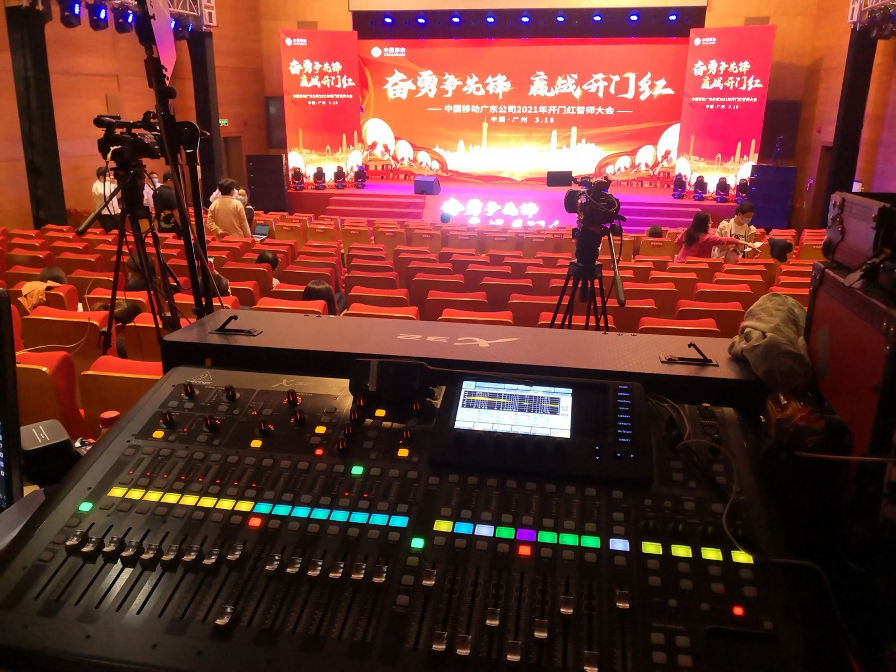
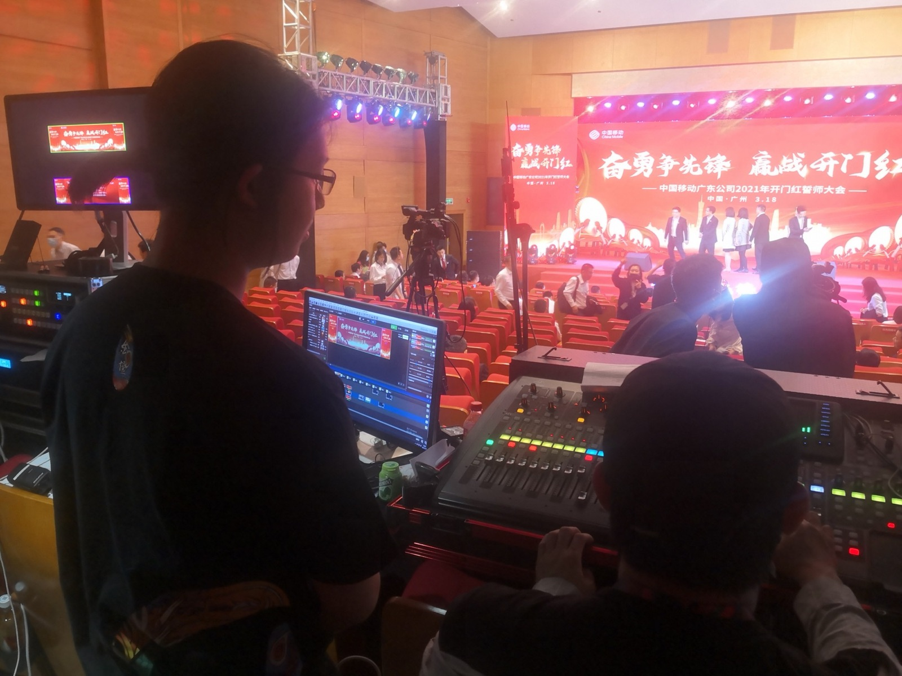
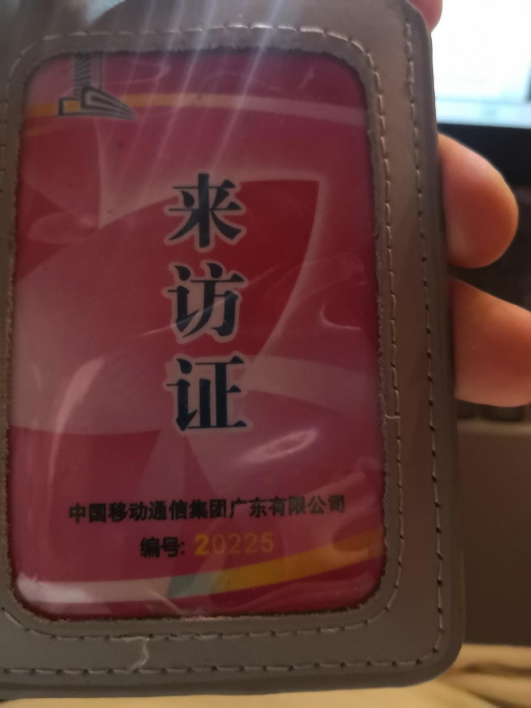

Project / 2021.03
中国移动广东公司 2021 年开门红誓师大会
- 单位
- 中国移动广东公司
- 担任
- 音响调度
- 时间 · 地点
- 2021.03.18 · 广州

01会场调音位
Behringer X32 数字调音台。舞台主题“奋勇争先锋 赢战开门红”——中国移动广东公司 2021 年开门红誓师大会，广州，3 月 18 日。
Front-of-house position with a Behringer X32 digital console. Stage theme “Charge Ahead, Win a Strong Start” — China Mobile Guangdong 2021 Kickoff Rally, Guangzhou, March 18.
会場のミキシング席。Behringer X32 デジタルミキサー。テーマ「奮勇争先鋒 贏戦開門紅」——中国移動広東公司 2021年 決起大会（広州、3月18日）。

02现场音响调度
大会进行中，于调音位负责现场音响调度。照片左侧为本人。
Running live sound at the mixing position during the rally. Left: Yin Yunqing.
大会進行中、ミキシング席で現場の音響オペレーションを担当。写真左が本人。

03来访证
活动期间使用的中国移动通信集团广东有限公司来访证。
Visitor pass issued by China Mobile Communications Group Guangdong Co., Ltd. for the event.
活動期間中に使用した中国移動通信集団広東有限公司の来訪証。